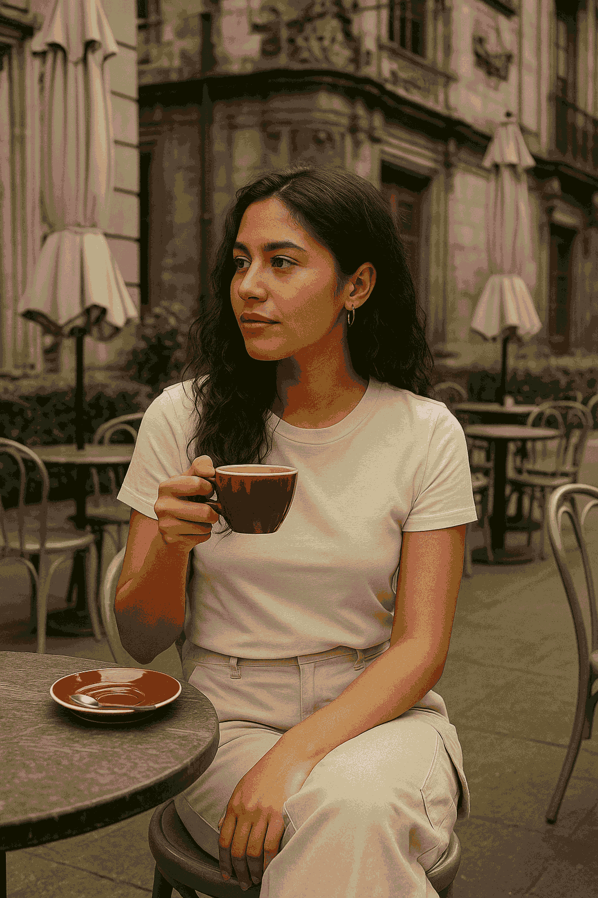

Let’s travel to three cities. Let’s taste their style.
SEOUL: WHERE MINIMALISM MEETS FUTURE VISION
Walk through the streets of Seongsu or Hannam and you’ll quickly understand: Seoul doesn’t just do coffee. It curates it.
The Korean capital has become globally famous for its hyper-aesthetic cafés, where concrete walls meet sculptural furniture and menus are designed with more care than most websites. Here, café culture is fashion-adjacent. Your outfit matters, your presence is part of the tableau, and the lighting? Always perfect for a photo.
“In Seoul, cafés aren’t places to sit. They’re stages to be seen.”
Take for example *Anthracite Coffee*, a repurposed factory with moody industrial vibes and hand-roasted blends. Or *Fritz Coffee Company*, where vintage Korean posters meet crisp Scandinavian wood. Every detail—from the cup shape to the playlists—is intentional. You’re not just ordering an Americano; you’re participating in a visual ritual.
Even the pastries feel sculptural. Coffee is served with precision. And the clientele? A mix of streetwear kids, creatives, and design-forward expats, all performing variations of “unbothered cool.”
This is the café as style object. The place where even silence feels styled.
---
PARIS: WHERE HISTORY SIPPS THROUGH EVERY CUP
Forget the tourist cafés near the Eiffel Tower. Real Parisian style lives in the cafés you discover between pages of a book or the glances of strangers who don’t care you're there.
Step into *Coutume Café* in the 7th arrondissement and you’re met with muted tones, impeccable latte art, and staff who wear aprons like couture. Or head to *Fragments* in Le Marais, where exposed stone meets minimalist elegance and regulars sip slowly as if time itself were steeped.
“In Paris, coffee is an attitude—and cafés are where stories begin.”
What makes Parisian cafés so editorial is the restraint. These are places where luxury is whispered. Where the lighting flatters without trying. Where the chairs creak with history and every person looks like a film still.
The menu is short. The baristas make eye contact. And the design? Effortlessly layered: glass, tile, brass, and echoes of lives lived slowly.
It’s not about trends. It’s about timelessness. A space where your leather journal makes more sense than your phone. Where you sip, not scroll. And where every espresso feels like it has a literary past.
---
CDMX: WHERE CREATIVITY DRIPS FROM THE WALLS
In Mexico City, cafés are loud with personality. They don’t blend in. They bloom.
This city’s café culture is like its streets: full of color, full of contradiction, and full of soul. From the artsy vibes of Roma Norte to the industrial edges of Juárez, CDMX cafés are part gallery, part hideout, part political statement.
Take *Café Avellaneda* in Coyoacán—tiny, punchy, perfect. Or *Blend Station* in Roma, where lush plants, brutalist lines, and massive tables invite you to sit, work, dream. And then there’s *Boicot Café*, which wears its rebellion with pride—handwritten signs, zines on the counter, and espresso strong enough to start a movement.
“In CDMX, cafés don’t follow aesthetics. They create them.”
Here, style is playful. Neon signs next to Aztec patterns. Handcrafted mugs. Local artists on the walls. And playlists that jump from indie rock to salsa without blinking.
It’s not curated. It’s alive. These cafés aren’t trying to be Paris or Seoul. They’re showing the world that chaos, when honest, is a kind of elegance too.
---
What these three cities prove is that style lives beyond clothing. It lives in spaces, rituals, the clink of ceramic, and the energy of people gathered under soft lights and strong ideas.
In Seoul, style is precision.
In Paris, style is poise.
In CDMX, style is pulse.
Together, these cafés are redefining what it means to be cool in the city. They offer something better than WiFi and oat milk—they offer identity.
“Coffee may be the excuse, but style is the real reason we return.”
So next time you travel, don’t just look for what to wear. Look for where to sit. The café might be the most stylish destination of all.
“Style isn’t just worn — it’s brewed.”
This is not just coffee. It’s culture, captured one cup at a time — only on Style Atlas.
Published: 2025-05-18